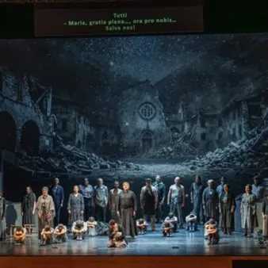

da ven 3 lug a sab 5 set
Carniarmonie 2026
Un’unica manifestazione con 3 appuntamenti raccolti e ordinati nel programma completo.
 Indicazioni
Indicazioni
- Costi e prenotazioni
- Costo non indicato · Prenotazione non indicata
- Programma
- Programma raccolto. Gli appuntamenti delle diverse schede sono riuniti in questa pagina.
- In caso di maltempo
- Nessuna indicazione specifica pubblicata.
- Note
- Le schede dei singoli appuntamenti sono state unite nella manifestazione principale.
L’EVENTO
Descrizione completa
Scarica il libretto completo della 35^ edizione di Carniarmonie!
Uno spettacolo dei friulani per i friulani, per ricordare i tragici eventi del ’76 e celebrare la rinascita del Friuli, con un linguaggio favolistico universale che susciterà commozione, gioia e orgoglio.
Istituzione Musicale e Sinfonica del Friuli Venezia Giulia
Direzione artistica, ideatrice, soggettista, librettista
FVG ORCHESTRA CORO DEL FRIULI VENEZIA GIULIA Coro di Voci bianche PUERI CANTORES DEL DUOMO DI UDINE Uno spettacolo dei friulani per i friulani, per ricordare i tragici eventi del ’76 e celebrare la rinascita del Friuli, con un linguaggio favolistico universale che susciterà commozione, gioia e orgoglio. Commissione e Produzione della Istituzione Musicale e Sinfonica del Friuli Venezia Giulia Direzione artistica, ideatrice, soggettista, librettista FIORENZA CEDOLINS Musiche di nuova composizione CRISTIAN CARRARA Regia, scene e costumi IVAN STEFANUTTI Maestro Concertatore e Direttore PAOLO PARONI Coreografie FEDERICA COMELLO Disegno luci CLAUDIO SCHMIDT Ideazione e realizzazione video STEFANO BERGOMAS Don Andrea, tenore Andrea Binetti Cati, soprano Iolanda Massimo Rosa/Maria, soprano Licia Piermatteo Bepi, baritono Francesco Bossi Pieri, baritono Andrea Piazza Margherita/Lùzia, mezzosoprano Stefania Seculin Meni/Garzone della bottega, tenore Federico Lepre Samantha/Anziana/ Amica, contralto Marianna Acito Kevin/Catechista, mezzosoprano Amina Sandrini Presidente Proloco operaio, basso-baritono Askar Lashkin Il sindaco, attore Giovanni Nistri Una voce, soprano Fiorenza Cedolins
Commissione e Produzione della Istituzione Musicale e Sinfonica del Friuli Venezia Giulia
Un concerto in un contesto informale, all’interno di un laboratorio dove degli artigiani realizzano delle vere opere d’arte per suonare la musica del più grande “artigiano” della storia della Musica. Le sue composizioni sono costruite con la precisione di un orologiaio, utilizzando simmetrie, canoni e fughe così come il costruttore calcola ogni centimetro, tensione e proporzione di uno strumento. Il rapporto di Johann Sebastian Bach con le trascrizioni si articola su due fronti: lui stesso fu un instancabile trascrittore di musiche altrui, da Vivaldi a Pergolesi, da Marcello a Couperin, e le sue opere sono state a loro volta trascritte e rielaborate da innumerevoli compositori di epoche successive che l’hanno considerata una “materia prima” ideale da adattare al pianoforte moderno o all’orchestra.
Posti limitati con prenotazione obbligatoria: info@corofvg.it
Sonata in si minore per flauto e cembalo obbligato BWV 1030
Un concerto in un contesto informale, all’interno di un laboratorio dove degli artigiani realizzano delle vere opere d’arte per suonare la musica del più grande “artigiano” della storia della Musica. Le sue composizioni sono costruite con la precisione di un orologiaio, utilizzando simmetrie, canoni e fughe così come il costruttore calcola ogni centimetro, tensione e proporzione di uno strumento. Il rapporto di Johann Sebastian Bach con le trascrizioni si articola su due fronti: lui stesso fu un instancabile trascrittore di musiche altrui, da Vivaldi a Pergolesi, da Marcello a Couperin, e le sue opere sono state a loro volta trascritte e rielaborate da innumerevoli compositori di epoche successive che l’hanno considerata una “materia prima” ideale da adattare al pianoforte moderno o all’orchestra. Ingresso € 5,00 Posti limitati con prenotazione obbligatoria: info@corofvg.it Informazioni sul sito www.corofvg.it A cura del Coro del Friuli Venezia Giulia MANUEL STAROPOLI flauto dolce e traversiere MANUEL TOMADIN clavicembalo Johann Sebastian Bach Sonata in si minore per flauto e cembalo obbligato BWV 1030 Partita n. 3 BWV 827 Sonata n. 5 in do maggiore BWV 529
Johann Sebastian Bach Sonata in si minore per flauto e cembalo obbligato BWV 1030
IL PROGRAMMA
Programma e orari
Le singole date appartengono alla stessa manifestazione. Ogni sede verificata dispone delle proprie indicazioni.
Programma completo della manifestazione
- Il calendario integrale è disponibile nella fonte ufficiale e può comprendere appuntamenti precedenti o successivi alle due settimane mostrate.
Sabato 5 settembre · Carniarmonie - Opera musical "55 secondi"
Tolmezzo · Tolmezzo - Teatro Candoni
- FVG ORCHESTRA CORO DEL FRIULI VENEZIA GIULIA Coro di Voci bianche PUERI CANTORES DEL DUOMO DI UDINE Uno spettacolo dei friulani per i friulani, per ricordare i tragici eventi del ’76 e celebrare la rinascita del Friuli, con un linguaggio favolistico universale che susciterà…
Sabato 5 settembre · Carniarmonie - Tra originali e trascrizioni
Prato Carnico · Prato Carnico - Loc. Chiampeas, Laboratorio Fratelli Leita
- Un concerto in un contesto informale, all’interno di un laboratorio dove degli artigiani realizzano delle vere opere d’arte per suonare la musica del più grande “artigiano” della storia della Musica. Le sue composizioni sono costruite con la precisione di un orologiaio…
INFORMAZIONI UTILI
Prima di partire
- Controllare la fonte prima di partire.
ORGANIZZAZIONE